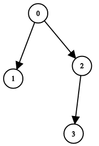
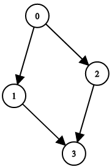
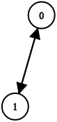

1361. 验证二叉树
三道闸门：每个结点入度 ≤ 1、并查集连边不成环、恰有 n−1 条边；三者同时成立必是一棵二叉树。
思路
- 二叉树 = 恰 n−1 条边 + 无环 + 每结点至多一个父亲；孩子数 ≤ 2 由左右两个槽位天然保证。
- 有环必不连通（n−1 条边下），所以「无环 + n−1 条边」就自动推出连通、唯一根，不必再单独数根。
- 并查集逐条边合并，
find(i) == find(c)说明成环（自环也会在此被抓到）；入度超 1 先抓。
图解
最优解
1class Solution {2 private int[] fa;3 4 public boolean validateBinaryTreeNodes(int n, int[] leftChild, int[] rightChild) {5 fa = new int[n];6 for (int i = 0; i < n; i++) fa[i] = i;7 int[] indeg = new int[n]; // 每个结点被几个父亲指到8 int edges = 0;9 for (int i = 0; i < n; i++) {10 int[] kids = {leftChild[i], rightChild[i]};11 for (int c : kids) {12 if (c < 0) continue;13 // 一个结点被两个父亲指到，必不是二叉树14 if (++indeg[c] > 1) return false;15 // 两端已经连通还连边，说明出现环（含自环）16 if (find(i) == find(c)) return false;17 fa[find(i)] = find(c);18 edges++;19 }20 }21 // n 个结点、恰 n−1 条边且无环，就自动连通成一棵树22 return edges == n - 1;23 }24 25 // 并查集查找（路径减半）26 private int find(int x) {27 while (fa[x] != x) x = fa[x] = fa[fa[x]];28 return x;29 }30}题目
二叉树上有 n 个节点，按从 0 到 n - 1 编号，其中节点 i 的两个子节点分别是 leftChild[i] 和 rightChild[i]。
只有 所有 节点能够形成且 只 形成 一颗 有效的二叉树时，返回 true；否则返回 false。
如果节点 i 没有左子节点，那么 leftChild[i] 就等于 -1。右子节点也符合该规则。
注意：节点没有值，本问题中仅仅使用节点编号。
示例 1：

输入：n = 4, leftChild = [1,-1,3,-1], rightChild = [2,-1,-1,-1] 输出：true
示例 2：

输入：n = 4, leftChild = [1,-1,3,-1], rightChild = [2,3,-1,-1] 输出：false
示例 3：

输入：n = 2, leftChild = [1,0], rightChild = [-1,-1] 输出：false
提示：
n == leftChild.length == rightChild.length1 <= n <= 104-1 <= leftChild[i], rightChild[i] <= n - 1
题面取自力扣当前版本。
数据快照 2026-11-04。题面版权归力扣所有，本站点仅供本人学习使用，请勿对外发布。